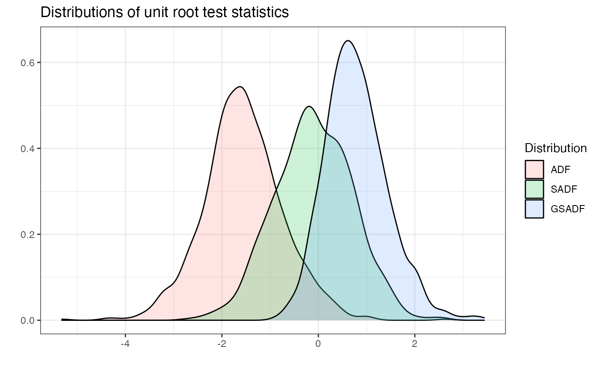

radf_mc_cv computes Monte Carlo critical values for the recursive unit
root tests. radf_mc_distr computes the distribution.
radf_mc_cv(n, minw = NULL, nrep = 1000L, seed = NULL)
radf_mc_distr(n, minw = NULL, nrep = 1000L, seed = NULL)A positive integer. The sample size.
A positive integer. The minimum window size (default = \((0.01 + 1.8/\sqrt(T))T\), where T denotes the sample size).
A positive integer. The number of Monte Carlo simulations.
An object specifying if and how the random number generator (rng)
should be initialized. Either NULL or an integer will be used in a call to
set.seed before simulation. If set, the value is saved as "seed" attribute
of the returned value. The default, NULL, will not change rng state, and
return .Random.seed as the "seed" attribute. Results are different between
the parallel and non-parallel option, even if they have the same seed.
For radf_mc_cv a list that contains the critical values for ADF,
BADF, BSADF and GSADF test statistics. For radf_mc_distr a list that
contains the ADF, SADF and GSADF distributions.
radf_wb_cv for wild bootstrap critical values and
radf_sb_cv for sieve bootstrap critical values
# \donttest{
# Default minimum window
mc <- radf_mc_cv(n = 100)
tidy(mc)
#> # A tibble: 3 × 4
#> sig adf sadf gsadf
#> <fct> <dbl> <dbl> <dbl>
#> 1 90 -0.532 0.961 1.63
#> 2 95 -0.188 1.26 1.94
#> 3 99 0.563 1.85 2.58
# Change the minimum window and the number of simulations
mc2 <- radf_mc_cv(n = 100, nrep = 600, minw = 20)
tidy(mc2)
#> # A tibble: 3 × 4
#> sig adf sadf gsadf
#> <fct> <dbl> <dbl> <dbl>
#> 1 90 -0.380 0.952 1.60
#> 2 95 -0.0506 1.31 1.88
#> 3 99 0.606 1.85 2.52
mdist <- radf_mc_distr(n = 100, nrep = 1000)
autoplot(mdist)

# }